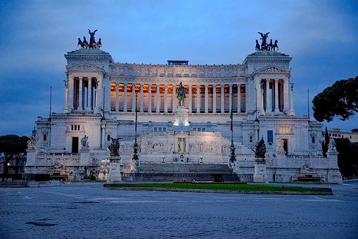
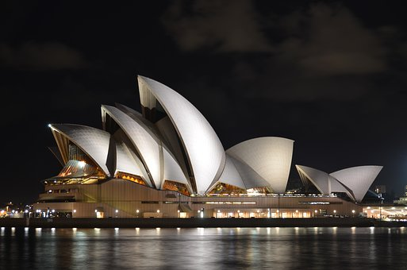
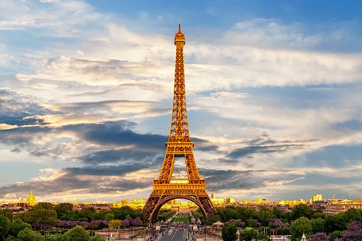

 The Capitoline Hill (/ˈkæpɪtəˌlaɪn, kəˈpɪ-/;[1][2] Latin: Collis Capitōlīnus [ˈkɔllɪs kapɪtoːˈliːnʊs]; Italian: Campidoglio [kampiˈdɔʎʎo]), between the Forum and the Campus Martius, is one of the Seven Hills of Rome. The hill was earlier known as Mons Saturnius, dedicated to the god Saturn. The word Capitolium first meant the temple of Jupiter Optimus Maximus later built here, and afterwards it was used for the whole hill (and even other temples of Jupiter on other hills), thus Mons Capitolinus (the adjective noun of Capitolium). Ancient sources refer the name to caput ("head", "summit") and the tale was that, when laying the foundations for the temple, the head of a man was found,[3] some sources even saying it was the head of some Tolus or Olus. The Capitolium was regarded by the Romans as indestructible, and was adopted as a symbol of eternity.[4][5]
 The Sydney Opera House is a multi-venue performing arts centre in Sydney, New South Wales, Australia. It is one of the 20th century's most famous and distinctive buildings.[3] Designed by Danish architect Jørn Utzon, the building was formally opened on 20 October 1973[4] after a gestation beginning with Utzon's 1957 selection as winner of an international design competition. The government of New South Wales, led by the premier, Joseph Cahill, authorised work to begin in 1958 with Utzon directing construction. The government's decision to build Utzon's design is often overshadowed by circumstances that followed, including cost and scheduling overruns as well as the architect's ultimate resignation.[5]
 The Eiffel Tower (/ˈaɪfəl/ EYE-fəl; French: tour Eiffel [tuʁ‿ɛfɛl] (About this sound listen)) is a wrought iron lattice tower on the Champ de Mars in Paris, France. It is named after the engineer Gustave Eiffel, whose company designed and built the tower. Constructed from 1887–89 as the entrance to the 1889 World's Fair, it was initially criticized by some of France's leading artists and intellectuals for its design, but it has become a global cultural icon of France and one of the most recognisable structures in the world.[3] The Eiffel Tower is the most-visited paid monument in the world; 6.91 million people ascended it in 2015.